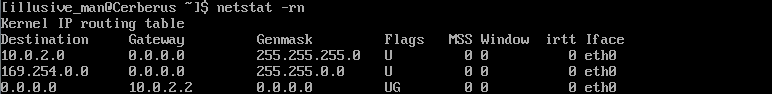
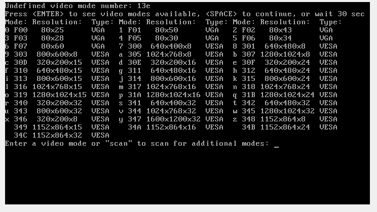

符號連接
ln -s 路徑 符號名(不需要先創建 符號目錄)
ln -s /etc etc_s
//刪除符號(rm -rf 不會刪除符號指向的內容 )
rm -rf etc_s
掛接光盤
sudo mount /dev/cdroom /mnt/cdroom
(光驅設備名 也可能是dvd)
Gateway 網關地址
netstat -rn

10.0.2.2
virtualbox tools
sudo yum -y install kernel-devel
sudo yum -y install gcc
sudo shutdown -r now
//install tools
mariadb源
vim /etc/yum.repos.d/MariaDB.repo
[mariadb]
name = MariaDB
baseurl = http://yum.mariadb.org/10.0/centos6-x86
gpgkey=https://yum.mariadb.org/RPM-GPG-KEY-MariaDB
gpgcheck=1
修改字符終端分辨率
vi /etc/grub.conf
愛kerenel最後增加vga=0x315
